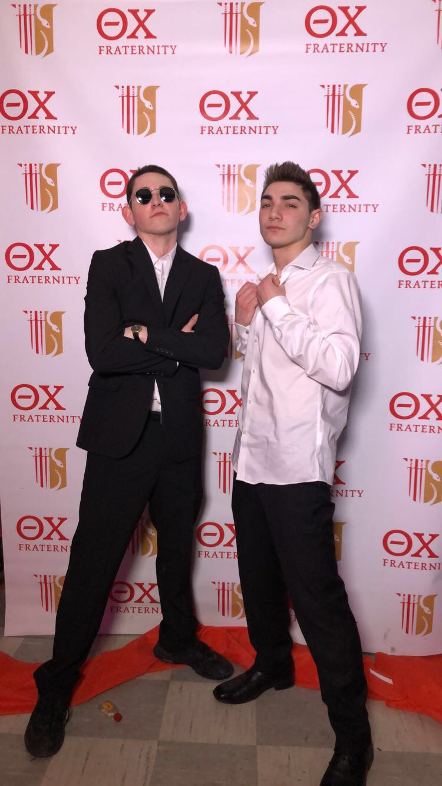
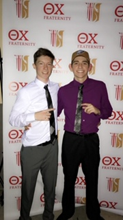
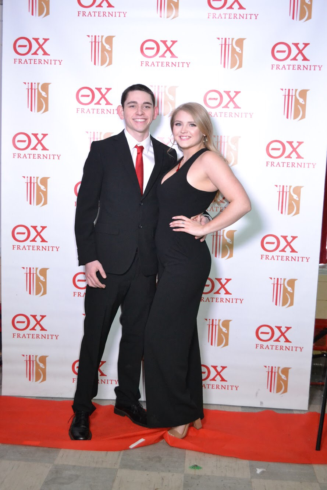
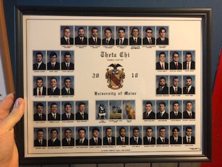

When I came to the University of Maine, I had no intentions of being in Greek Life. A friend of mine from my home town was the opposite way. He rushed a few places, but one that stuck out to him was Theta Chi. He invited me to come to wing night at the house, and meet the brothers. I will never turn down free food so I attended the Rush Event. I liked a lot of the guys there and they were very easy to talk to. The brothers invited me a few more time, the most fun was date night. I recieved a bid and I was hesitant to sign it. Then I heard someone scream, "If you sign you're bid you're really cool!". I consider myself pretty cool and I signed.
Ever since I have been initiated I have strived to make friends, hold responsibility among the Chapter, and further develope my leadership skills. By participating in Philanthropy events, we are able to donate money to The United Service Organization. We have raised a lot of money for the troops, which means a lot to me because my family members are in the service. Meeting new people is something I consider myself good at. I have goals of becoming the President of the Fraternity, by slowing climbing up the ranks. My most recent position was Historian, holding the responsibilty of creating the composite for the 2019-2020 school year.



